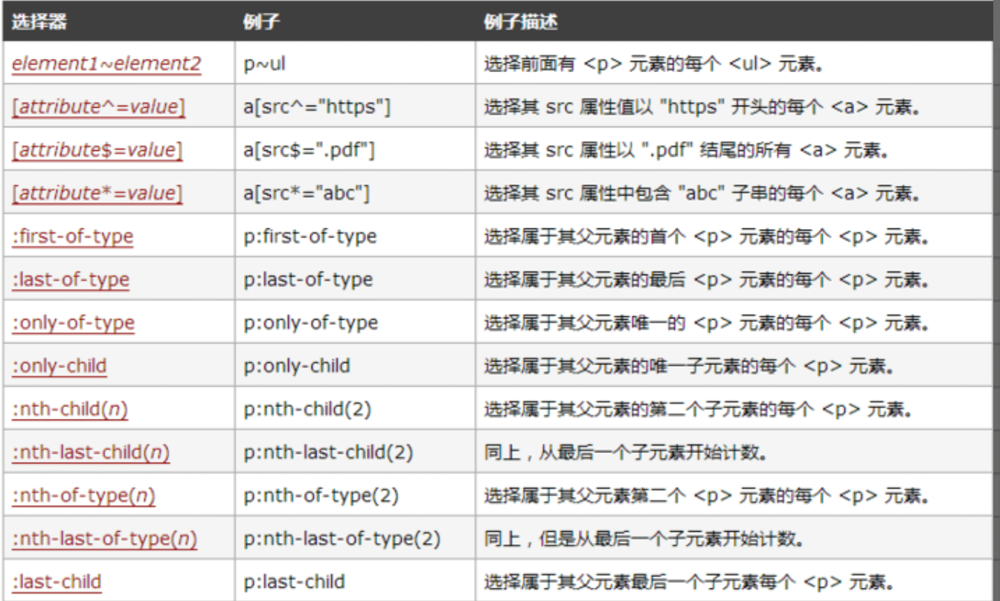

CSS3新增了哪些特性？
参考答案
一、是什么
css，即层叠样式表（Cascading Style Sheets）的简称，是一种标记语言，由浏览器解释执行用来使页面变得更美观
css3是css的最新标准，是向后兼容的，CSS1/2 的特性在 CSS3 里都是可以使用的
而 CSS3 也增加了很多新特性，为开发带来了更佳的开发体验
二、选择器
css3中新增了一些选择器，主要为如下图所示：

三、新样式
边框
css3新增了三个边框属性，分别是：
- border-radius：创建圆角边框
- box-shadow：为元素添加阴影
- border-image：使用图片来绘制边框
box-shadow
设置元素阴影，设置属性如下：
- 水平阴影
- 垂直阴影
- 模糊距离(虚实)
- 阴影尺寸(影子大小)
- 阴影颜色
- 内/外阴影
其中水平阴影和垂直阴影是必须设置的
背景
新增了几个关于背景的属性，分别是background-clip、background-origin、background-size和background-break
background-clip
用于确定背景画区，有以下几种可能的属性：
- background-clip: border-box; 背景从border开始显示
- background-clip: padding-box; 背景从padding开始显示
- background-clip: content-box; 背景显content区域开始显示
- background-clip: no-clip; 默认属性，等同于border-box
通常情况，背景都是覆盖整个元素的，利用这个属性可以设定背景颜色或图片的覆盖范围
background-origin
当我们设置背景图片时，图片是会以左上角对齐，但是是以border的左上角对齐还是以padding的左上角或者content的左上角对齐? border-origin正是用来设置这个的
- background-origin: border-box; 从border开始计算background-position
- background-origin: padding-box; 从padding开始计算background-position
- background-origin: content-box; 从content开始计算background-position
默认情况是padding-box，即以padding的左上角为原点
background-size
background-size属性常用来调整背景图片的大小，主要用于设定图片本身。有以下可能的属性：
- background-size: contain; 缩小图片以适合元素（维持像素长宽比）
- background-size: cover; 扩展元素以填补元素（维持像素长宽比）
- background-size: 100px 100px; 缩小图片至指定的大小
- background-size: 50% 100%; 缩小图片至指定的大小，百分比是相对包 含元素的尺寸
background-break
元素可以被分成几个独立的盒子（如使内联元素span跨越多行），background-break 属性用来控制背景怎样在这些不同的盒子中显示
- background-break: continuous; 默认值。忽略盒之间的距离（也就是像元素没有分成多个盒子，依然是一个整体一样）
- background-break: bounding-box; 把盒之间的距离计算在内；
- background-break: each-box; 为每个盒子单独重绘背景
文字
word-wrap
语法：word-wrap: normal|break-word
- normal：使用浏览器默认的换行
- break-all：允许在单词内换行
text-overflow
text-overflow设置或检索当当前行超过指定容器的边界时如何显示，属性有两个值选择：
- clip：修剪文本
- ellipsis：显示省略符号来代表被修剪的文本
text-shadow
text-shadow可向文本应用阴影。能够规定水平阴影、垂直阴影、模糊距离，以及阴影的颜色
text-decoration
CSS3里面开始支持对文字的更深层次的渲染，具体有三个属性可供设置：
- text-fill-color: 设置文字内部填充颜色
- text-stroke-color: 设置文字边界填充颜色
- text-stroke-width: 设置文字边界宽度
颜色
css3新增了新的颜色表示方式rgba与hsla
- rgba分为两部分，rgb为颜色值，a为透明度
- hala分为四部分，h为色相，s为饱和度，l为亮度，a为透明度
四、transition 过渡
transition属性可以被指定为一个或多个 CSS 属性的过渡效果，多个属性之间用逗号进行分隔，必须规定两项内容：
- 过度效果
- 持续时间
语法如下：
transition： CSS属性，花费时间，效果曲线(默认ease)，延迟时间(默认0)上面为简写模式，也可以分开写各个属性
transition-property: width;
transition-duration: 1s;
transition-timing-function: linear;
transition-delay: 2s;五、transform 转换
transform属性允许你旋转，缩放，倾斜或平移给定元素
transform-origin：转换元素的位置（围绕那个点进行转换），默认值为(x,y,z):(50%,50%,0)
使用方式：
- transform: translate(120px, 50%)：位移
- transform: scale(2, 0.5)：缩放
- transform: rotate(0.5turn)：旋转
- transform: skew(30deg, 20deg)：倾斜
六、animation 动画
动画这个平常用的也很多，主要是做一个预设的动画。和一些页面交互的动画效果，结果和过渡应该一样，让页面不会那么生硬
animation也有很多的属性
- animation-name：动画名称
- animation-duration：动画持续时间
- animation-timing-function：动画时间函数
- animation-delay：动画延迟时间
- animation-iteration-count：动画执行次数，可以设置为一个整数，也可以设置为infinite，意思是无限循环
- animation-direction：动画执行方向
- animation-paly-state：动画播放状态
- animation-fill-mode：动画填充模式
七、渐变
颜色渐变是指在两个颜色之间平稳的过渡，css3渐变包括
- linear-gradient：线性渐变
background-image: linear-gradient(direction, color-stop1, color-stop2, ...);
- radial-gradient：径向渐变
linear-gradient(0deg, red, green);
八、其他
关于css3其他的新特性还包括flex弹性布局、Grid栅格布局，这两个布局在以前就已经讲过，这里就不再展示
除此之外，还包括多列布局、媒体查询、混合模式等等......
CSS3是CSS的最新版本，它引入了许多新特性和改进，以增强网页设计的能力和用户体验。以下是一些重要的CSS3特性：
- 选择器增强：CSS3引入了新的选择器，如属性选择器、伪类选择器（如
:nth-child、:nth-of-type）、伪元素选择器（如::first-line、::before、::after）等。
- Flexbox布局：一种新的布局模式，为一维布局提供了更灵活的伸缩性。
- Grid布局：一种二维布局系统，允许在网页上以网格形式放置元素。
- 多列布局：允许内容在多个列中显示，类似于报纸的布局。
- 圆角：
border-radius属性允许创建圆角边框。
- 阴影和反射：
box-shadow和text-shadow属性用于添加阴影效果，::before和::after伪元素可以创建反射效果。
- 渐变：线性渐变（
linear-gradient）和径向渐变（radial-gradient）可以用于背景图像。
- 转换：
transform属性允许对元素进行旋转、缩放、倾斜和位移等变换。
- 过渡：
transition属性允许在属性值变化时创建平滑的过渡效果。
- 动画：
@keyframes规则结合animation属性，允许创建复杂的动画效果。
- 媒体查询：允许根据不同的媒体类型和特性（如屏幕大小、分辨率等）应用不同的样式。
- Web字体：
@font-face规则允许网页使用自定义字体。
- 背景大小：
background-size属性允许控制背景图像的大小。
- 弹性盒子模型：一种新的布局方式，允许元素在容器内灵活地伸缩。
- 边框图像：
border-image属性允许使用图像作为边框。
- 形状：
clip-path属性允许创建非矩形的元素形状。
- 滤镜效果：
filter属性提供了多种视觉效果，如模糊、亮度调整等。
- 自定义属性（CSS变量）：允许在CSS中定义变量，以便于样式的复用和维护。
- 响应式图像：
srcset和sizes属性允许为不同屏幕尺寸提供不同分辨率的图片。
- 全屏模式：
:fullscreen伪类选择器允许元素在全屏模式下应用特定的样式。